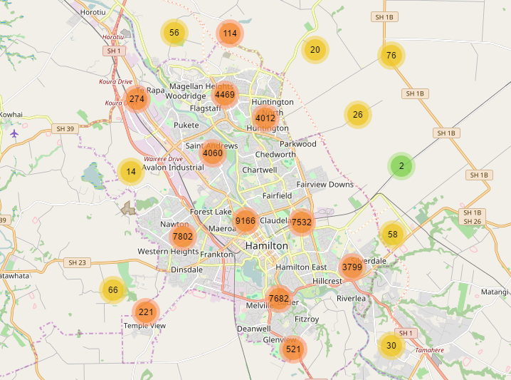

Provides Beautiful Animated Marker Clustering functionality for Leaflet, a JS library for interactive maps.
Requires Leaflet 1.0.0

For a Leaflet 0.7 compatible version, use the leaflet-0.7 branch
For a Leaflet 0.5 compatible version, Download b128e950
For a Leaflet 0.4 compatible version, Download the 0.2 release
Include the plugin CSS and JS files on your page after Leaflet files, using your method of choice:
v1.4.1 releasehttps://unpkg.com/leaflet.markercluster@1.4.1/dist/npm install leaflet.markerclusterIn each case, use files in the dist folder:
MarkerCluster.cssMarkerCluster.Default.css (not needed if you use your own iconCreateFunction instead of the default one)leaflet.markercluster.js (or leaflet.markercluster-src.js for the non-minified version)Install jake npm install -g jake then run npm install
jake.jake test.See the included examples for usage.
The realworld example is a good place to start, it uses all of the defaults of the clusterer. Or check out the custom example for how to customise the behaviour and appearance of the clusterer
Create a new MarkerClusterGroup, add your markers to it, then add it to the map
var markers = L.markerClusterGroup();
markers.addLayer(L.marker(getRandomLatLng(map)));
... Add more layers ...
map.addLayer(markers);
By default the Clusterer enables some nice defaults for you:
disableClusteringAtZoom option){ weight: 1.5, color: '#222', opacity: 0.5 }.You can disable any of these as you want in the options when you create the MarkerClusterGroup:
var markers = L.markerClusterGroup({
spiderfyOnMaxZoom: false,
showCoverageOnHover: false,
zoomToBoundsOnClick: false
});
As an option to MarkerClusterGroup you can provide your own function for creating the Icon for the clustered markers.
The default implementation changes color at bounds of 10 and 100, but more advanced uses may require customising this.
You do not need to include the .Default css if you go this way.
You are passed a MarkerCluster object, you'll probably want to use getChildCount() or getAllChildMarkers() to work out the icon to show.
var markers = L.markerClusterGroup({
iconCreateFunction: function(cluster) {
return L.divIcon({ html: '<b>' + cluster.getChildCount() + '</b>' });
}
});
Check out the custom example for an example of this.
If you need to update the clusters icon (e.g. they are based on markers real-time data), use the method refreshClusters().
You can also provide a custom function as an option to MarkerClusterGroup to override the spiderfy shape positions. The example below implements linear spiderfy positions which overrides the default circular shape.
var markers = L.markerClusterGroup({
spiderfyShapePositions: function(count, centerPt) {
var distanceFromCenter = 35,
markerDistance = 45,
lineLength = markerDistance * (count - 1),
lineStart = centerPt.y - lineLength / 2,
res = [],
i;
res.length = count;
for (i = count - 1; i >= 0; i--) {
res[i] = new Point(centerPt.x + distanceFromCenter, lineStart + markerDistance * i);
}
return res;
}
});
disableClusteringAtZoom option).L.DomUtil.TRANSITION is false, this option has no effect (no animation is possible).animate option is also true) then adding individual markers to the MarkerClusterGroup after it has been added to the map will add the marker and animate it into the cluster. Defaults to false as this gives better performance when bulk adding markers. addLayers does not support this, only addLayer with individual Markers.spiderfyOnMaxZoom option when using disableClusteringAtZoom.disableClusteringAtZoom does not restore their previous icon (see #391).{ weight: 1.5, color: '#222', opacity: 0.5 }.Options for the addLayers method. See #357 for explanation on how the chunking works.
Leaflet events like click, mouseover, etc. are just related to Markers in the cluster.
To receive events for clusters, listen to 'cluster' + '<eventName>', ex: clusterclick, clustermouseover, clustermouseout.
Set your callback up as follows to handle both cases:
markers.on('click', function (a) {
console.log('marker ' + a.layer);
});
markers.on('clusterclick', function (a) {
// a.layer is actually a cluster
console.log('cluster ' + a.layer.getAllChildMarkers().length);
});
cluster and markers attributes)cluster and markers attributes)addLayer, removeLayer and clearLayers are supported and they should work for most uses.
addLayers and removeLayers are bulk methods for adding and removing markers and should be favoured over the single versions when doing bulk addition/removal of markers. Each takes an array of markers. You can use dedicated options to fine-tune the behaviour of addLayers.
These methods extract non-group layer children from Layer Group types, even deeply nested. However, be noted that:
chunkProgress jumps backward when addLayers finds a group (since appending its children to the input array makes the total increase).hasLayer method will return true for non-group child layers, but false on any (possibly parent) Layer Group types.If you are removing a lot of markers it will almost definitely be better to call clearLayers then call addLayers to add the markers you don't want to remove back in. See #59 for details.
If you have a marker in your MarkerClusterGroup and you want to get the visible parent of it (Either itself or a cluster it is contained in that is currently visible on the map). This will return null if the marker and its parent clusters are not visible currently (they are not near the visible viewpoint)
var visibleOne = markerClusterGroup.getVisibleParent(myMarker);
console.log(visibleOne.getLatLng());
If you have customized the clusters icon to use some data from the contained markers, and later that data changes, use this method to force a refresh of the cluster icons. You can use the method:
markers.refreshClusters();
markers.refreshClusters([myMarker0, myMarker33]);
markers.refreshClusters({id_0: myMarker0, id_any: myMarker33});
markers.refreshClusters(myLayerGroup);
markers.refreshClusters(myMarker);
The plugin also adds a method on L.Marker to easily update the underlying icon options and refresh the icon.
If passing a second argument that evaluates to true, the method will also trigger a refreshCluster on the parent MarkerClusterGroup for that single marker.
// Use as many times as required to update markers,
// then call refreshClusters once finished.
for (i in markersSubArray) {
markersSubArray[i].refreshIconOptions(newOptionsMappingArray[i]);
}
markers.refreshClusters(markersSubArray);
// If updating only one marker, pass true to
// refresh this marker's parent clusters right away.
myMarker.refreshIconOptions(optionsMap, true);
The following methods can be used with clusters (not the group). They are typically used for event handling.
When you receive an event from a cluster you can query it for the bounds.
markers.on('clusterclick', function (a) {
var latLngBounds = a.layer.getBounds();
});
You can also query for the bounding convex polygon. See example/marker-clustering-convexhull.html for a working example.
markers.on('clusterclick', function (a) {
map.addLayer(L.polygon(a.layer.getConvexHull()));
});
When you receive an event from a cluster you can zoom to its bounds in one easy step.
If all of the markers will appear at a higher zoom level, that zoom level is zoomed to instead.
zoomToBounds takes an optional argument to pass options to the resulting fitBounds call.
See marker-clustering-zoomtobounds.html for a working example.
markers.on('clusterclick', function (a) {
a.layer.zoomToBounds({padding: [20, 20]});
});
The Clusterer can handle 10,000 or even 50,000 markers (in chrome). IE9 has some issues with 50,000.
Note: these two examples use the chunkedLoading option set to true in order to avoid locking the browser for a long time.
Leaflet.markercluster is free software, and may be redistributed under the MIT-LICENSE.
Leaflet.markercluster plugin is very popular and as such it generates high and diverse expectations for increased functionalities.
If you are in that case, be sure to have a look first at the repository issues in case what you are looking for would already be discussed, and some workarounds would be proposed.
Check also the below sub-plugins:
| Plugin | Description | Maintainer |
|---|---|---|
| Leaflet.FeatureGroup.SubGroup | Creates a Feature Group that adds its child layers into a parent group when added to a map (e.g. through L.Control.Layers). Typical usage is to dynamically add/remove groups of markers from Marker Cluster. | ghybs |
| Leaflet.MarkerCluster.LayerSupport | Brings compatibility with L.Control.Layers and other Leaflet plugins. I.e. everything that uses direct calls to map.addLayer and map.removeLayer. | ghybs |
| Leaflet.MarkerCluster.Freezable | Adds the ability to freeze clusters at a specified zoom. E.g. freezing at maxZoom + 1 makes as if clustering was programmatically disabled. | ghybs |
| Leaflet.MarkerCluster.PlacementStrategies | Implements new strategies to position clustered markers (eg: clock, concentric circles, ...). Recommended to use with circleMarkers. Demo | adammertel / UNIVIE |
| Leaflet.MarkerCluster.List | Displays child elements in a list. Suitable for mobile devices. Demo | adammertel / UNIVIE |